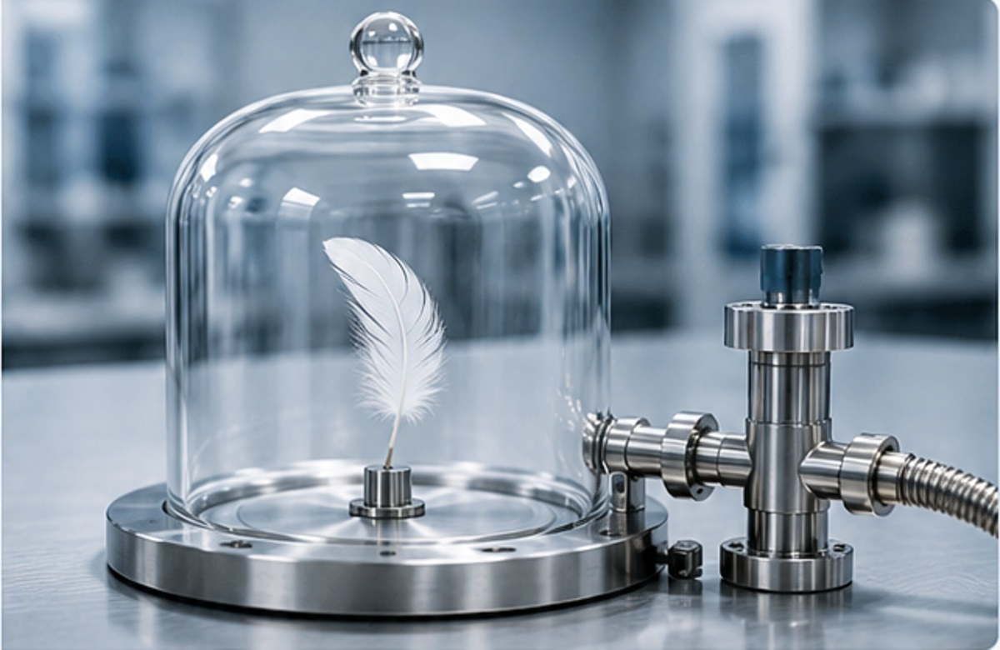
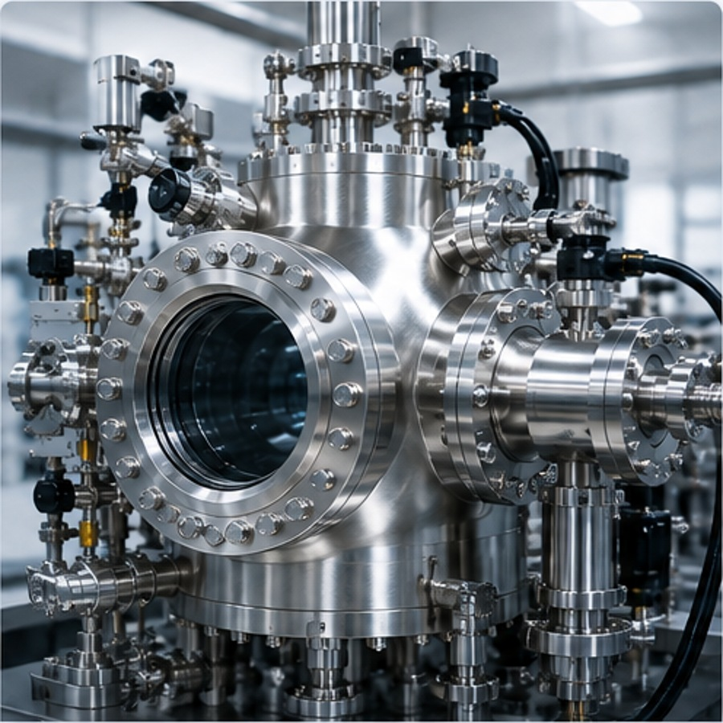

VACUUM TECHNOLOGY / 01
真空ってなに？
葵（あおい）
真空って、空気がぜーんぶなくなった状態でしょ？
陽斗（はると）
でも……完全に何もない状態って、本当に作れるのかな
けー子ちゃん先生
いいところに気づきましたね♪
実は、技術でいう「真空」は、“何もない状態”という意味ではないんですよ
STEP 1
1. 真空って、どんな状態？
「真空＝空気がない空間」と思っていませんか？
私たちのまわりには、目には見えなくても空気があります。
真空は、その空気を容器の中から外へ出して、ふだんより空気（気体）が少なくなった状態です。
実際には、完全に空気がなくなる必要はありません。
真空装置の中にも、わずかに気体分子は残っています。
空気が少なくなると、気体分子が容器の壁にぶつかる回数が減り、圧力が低くなります。
ふだんの空間空気がたくさんある
→ 空気を外へ出す気体分子を減らす
→ 圧力が下がる壁への衝突が減る
→ 真空大気圧より低い状態
身近な例：真空パック
食品の真空パックも、袋の中の空気を抜くという考え方は同じです。
ただし、工場や研究で使う真空装置では、目的に応じてさらに低い圧力まで気体を取り除きます。
もう少し正確にいうと
真空とは、大気圧より低い圧力の気体で満たされた空間です。
STEP 2
2. 空気を抜いてみる
密閉した容器から気体を外へ出していくと、容器の中の気体分子が少なくなります。
空気を抜く真空ポンプで排気
↓気体分子が減る
↓空気から受ける影響が小さくなる

ベルジャー型の真空容器｜シンプルな容器でも「密閉して空気を抜く」という基本は同じです。EPAオリジナル・イメージ
STEP 3
3. 中では何が起きている？
空気を抜くと、気体分子の数が減ります。すると容器の壁へぶつかる回数も減り、圧力が下がります。
STEP 4
4. 空気を抜くと、圧力が下がる
空気を抜いて気体分子が少なくなると、容器の壁への衝突が減り、圧力が下がります。真空の状態は、この圧力を使って表します。
ポイント：圧力の数値が低いほど「真空度が高い」と表現します。
「高真空」の“高い”は圧力の数値が高いという意味ではありません。空気（気体）がより少なく、圧力がより低い状態ほど、真空度が高いといいます。
STEP 5
5. 実際の真空装置を見てみよう
実際の研究・製造装置でも基本は同じです。容器の中から気体を外へ出し、どこまで圧力が下がったかを測ります。
真空チャンバー真空にするための容器
真空ポンプ気体を外へ出す
真空計圧力を測る

研究用真空チャンバー｜実際の装置では、チャンバー、配管、ポンプ、真空計などが組み合わされます。EPAオリジナル・イメージ
ここまで分かればOK
真空は、完全に何もない空間ではなく、大気圧より低い圧力の状態
空気を抜くと気体分子が減る
分子の衝突が減ると圧力が下がる
真空は圧力の数値で表す
けー子ちゃん先生
真空は“完全な無”ではない、と覚えておきましょう♪